Teoría, método de diseño, ejemplos resueltos y ejercicios con cilindros de simple y doble efecto, desde uno hasta tres actuadores.
Progresión: 1 → 2 → 3 cilindrosMétodo: memorias de etapaTrabajo: lectura, diseño y comprobación
INACAPGuía de estudio · Secuencias neumáticas
Propósito de aprendizaje
Pasar de una descripción de movimientos a un programa Ladder verificable
Interpretar
Reconocer cilindros, válvulas, sensores de posición, movimientos y condiciones de seguridad.
Secuenciar
Dividir el ciclo en etapas y definir qué evento permite avanzar de una etapa a la siguiente.
Programar
Implementar memorias, transiciones, salidas, temporizadores, parada y reinicio controlado.
Meta: al finalizar podrás diseñar y explicar secuencias de uno, dos y tres cilindros sin depender de ensayo y error.
INACAPRuta de aprendizaje
Construcción incremental
Seis casos, desde lo básico hasta una secuencia completa
Caso 1
Un cilindro de simple efecto.
Caso 2
Un cilindro de doble efecto.
Caso 3
Dos cilindros de simple efecto.
Caso 4
Dos cilindros de doble efecto.
Caso 5
Tres cilindros de simple efecto.
Caso 6
Tres cilindros de doble efecto.
En cada caso: observarás el proceso, identificarás señales, revisarás un ejemplo y resolverás un ejercicio de modificación.
INACAPFundamentos neumáticos
Antes de programar
El tipo de cilindro determina qué puede ordenar el PLC
Actuador
Avance
Retroceso
Válvula habitual
Simple efecto
Por aire comprimido.
Por resorte al quitar el aire.
3/2 monoestable, una bobina.
Doble efecto
Por aire comprimido.
También por aire comprimido.
5/2 monoestable o 5/2 biestable.
No confundas actuador y válvula: el cilindro realiza el movimiento; la electroválvula dirige el aire y es la salida eléctrica controlada por el PLC.
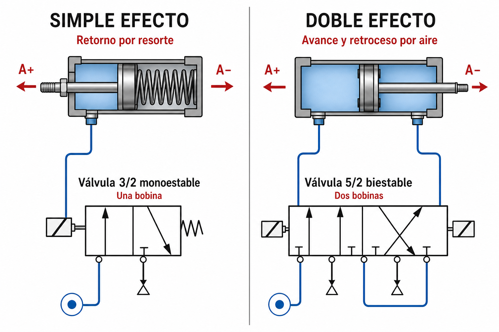
1.pngInserta aquí la comparación de cilindros y válvulas.
Imagen 1. Cilindros de simple y doble efecto con sus válvulas de mando.
INACAPSensores, movimientos y salidas
Lenguaje común
Cómo nombrar posiciones y movimientos
Cilindro A
a0 retraídoa1 extendidoA+ avanzarA− retroceder
Para B se usan b0, b1, B+ y B−. Para C se usan c0, c1, C+ y C−.
Señales del PLC
X: entrada física, como pulsador o sensor.
Y: salida física conectada a una bobina.
M: memoria interna usada como etapa.
T: temporizador.
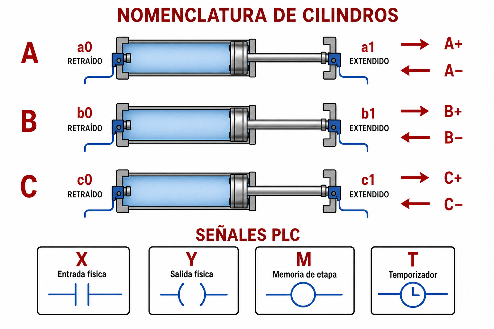
2.pngInserta aquí la nomenclatura de sensores y símbolos Ladder.
Imagen 2. Convenciones de posición, movimiento y direcciones utilizadas en la guía.
INACAPFundamentos de programación Ladder
Lectura de redes
El PLC evalúa condiciones de izquierda a derecha y de arriba hacia abajo
Contacto NO
Conduce cuando su variable vale 1.
Contacto NC
Conduce cuando su variable vale 0.
Bobina
Escribe el resultado lógico en una salida o memoria.
SET / RST
Enclava o borra una memoria aunque la condición deje de estar activa.
R1X0 START · /X1 STOP · a0SET M1
R2M1 · a1RST M1 / SET M2
R3M1 + M2Y0
Convención de esta guía: el punto “·” significa AND, el signo “+” significa OR y “/X1” representa una condición negada o contacto normalmente cerrado. La lógica es independiente de marca: adapta el relé de primer barrido y la base de tiempo a tu PLC.
INACAPMétodo de diseño
Regla principal
Una etapa responde tres preguntas
1. ¿Qué está ocurriendo?
Ejemplo: el cilindro A está avanzando. La memoria M1 identifica esa etapa.
2. ¿Qué salida debe activarse?
Mientras M1 esté activa, la salida correspondiente genera A+.
3. ¿Cuándo termina?
El sensor a1 confirma el final del avance y habilita la etapa siguiente.
Principio de exclusión: durante el ciclo debe existir una sola memoria de etapa activa. Si dos etapas quedan activas al mismo tiempo, pueden aparecer órdenes contradictorias.
Regla de transición: una misma condición de cambio debe activar la etapa siguiente y desactivar la etapa actual.
INACAPMétodo de diseño
Antes de abrir el software
Diseña la secuencia en cinco pasos
1
Escribe el ciclo
Ejemplo: A+ A−.
2
Comprueba la posición inicial
El sensor a0 debe estar activo.
3
Crea una tabla de etapas
Una fila por movimiento o espera.
4
Programa las transiciones
Cada sensor o temporizador permite avanzar.
5
Asocia etapas con salidas
Las salidas no deciden la secuencia: obedecen a las memorias.
Consejo: no comiences programando bobinas. Primero termina la tabla de etapas; luego el Ladder se vuelve una traducción ordenada.
INACAPCaso 1 · Un cilindro de simple efecto
Ejemplo resuelto 1
Un ciclo automático: A+ · espera · A−
Descripción
Al presionar START, A avanza. Cuando llega a a1, permanece extendido durante 1 segundo. Luego se desenergiza la válvula y el resorte lo retrae hasta a0.
Dirección
Elemento
X0
START
X1
STOP / reset
X2
a0 retraído
X3
a1 extendido
Y0
Válvula 3/2: A+
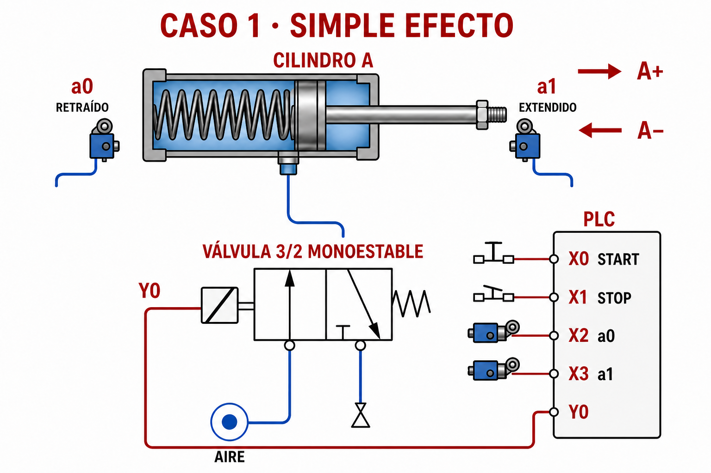
3.pngInserta aquí el esquema electroneumático del caso 1.
Imagen 3. Cilindro A de simple efecto, válvula 3/2 y sensores a0–a1.
INACAPCaso 1 · Un cilindro de simple efecto
Tabla de etapas
La salida permanece activa hasta ordenar el retorno
M0ReposoSTART y a0
M1A+hasta a1
M2EsperaT0 = 1 s
M3A−hasta a0
Etapa
Estado de Y0
Condición para avanzar
Siguiente
M0 reposo
0
X0 · X2
M1
M1 avance
1
X3 = a1
M2
M2 espera
1
T0 cumplido
M3
M3 retorno
0
X2 = a0
M0
Observa: en un cilindro de simple efecto, A− se logra poniendo Y0 = 0. No existe una segunda bobina para retroceder.
INACAPCaso 1 · Un cilindro de simple efecto
Resumen de redes
Memorias, transición, temporizador y salida
R1Primer ciclo del PLCSET M0
R2M0 · X0 · /X1 · X2SET M1 / RST M0
R3M1 · X3SET M2 / RST M1
R4M2TON T0 1 s
R5M2 · T0SET M3 / RST M2
R6M3 · X2SET M0 / RST M3
R7/X1 · (M1 + M2)Y0
R8X1 STOPRST M1 M2 M3 / SET M0
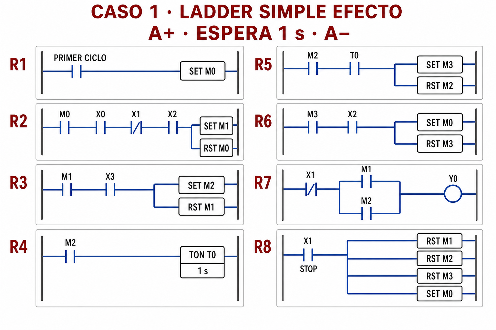
4.pngInserta aquí el programa Ladder completo del caso 1.
Modifica el ejemplo para que A permanezca extendido durante 2,5 segundos. El ciclo solo puede iniciar si a0 está activo. Agrega una luz Y1 que permanezca encendida únicamente durante la espera.
1. Secuencia escrita con movimientos y espera.
2. Tabla de entradas, salidas y memorias.
3. Ladder con START, STOP y T0.
4. Prueba de ciclo normal y sensor ausente.
Orientación para comprobar tu respuesta
La etapa de espera debe conservar Y0 = 1, activar Y1 = 1 y ejecutar el temporizador. Cuando T0 termina, ambas salidas deben apagarse para permitir el retorno por resorte.
INACAPCaso 2 · Un cilindro de doble efecto
Ejemplo resuelto 2
Un ciclo con órdenes independientes: A+ · espera · A−
Se utilizará una válvula 5/2 biestable de dos bobinas. Una bobina ordena el avance y la otra ordena el retroceso.
Dirección
Elemento
X0 / X1
START / STOP
X2 / X3
a0 / a1
Y0
Bobina YA+
Y1
Bobina YA−
Interbloqueo obligatorio:Y0 y Y1 nunca deben activarse simultáneamente.
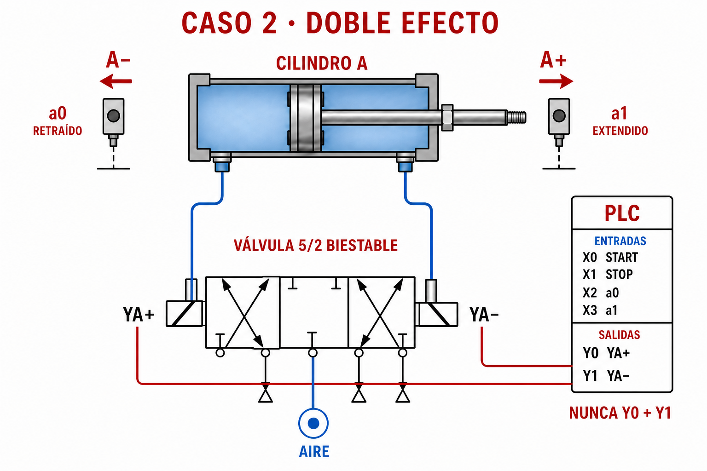
5.pngInserta aquí el esquema electroneumático del caso 2.
Imagen 5. Cilindro A de doble efecto y válvula 5/2 de dos bobinas.
INACAPCaso 2 · Un cilindro de doble efecto
Tabla de etapas
Cada sentido posee su propia salida
M10ReposoSTART y a0
M11A+YA+ hasta a1
M12EsperaT1 = 1 s
M13A−YA− hasta a0
Etapa
YA+
YA−
Transición
M10 reposo
0
0
START y a0
M11 avance
1
0
a1
M12 espera
0
0
T1 cumplido
M13 retorno
0
1
a0
Válvula biestable: después de la orden de avance, la corredera conserva su posición aunque YA+ se apague. Por eso durante la espera ambas bobinas pueden quedar en 0.
INACAPCaso 2 · Un cilindro de doble efecto
Lógica principal
Las etapas separan avance, espera y retroceso
R1M10 · X0 · /X1 · X2M11 ← M10
R2M11 · X3M12 ← M11
R3M12TON T1 1 s
R4M12 · T1M13 ← M12
R5M13 · X2M10 ← M13
R6/X1 · M11 · /Y1Y0 YA+
R7/X1 · M13 · /Y0Y1 YA−
STOP no es descarga neumática: una válvula biestable puede conservar la posición. La parada de emergencia real requiere diseño neumático y eléctrico de seguridad.
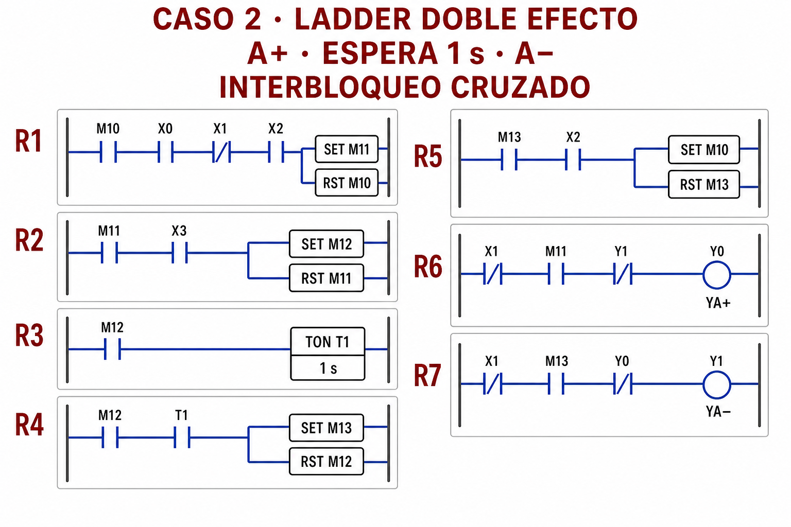
6.pngInserta aquí el programa Ladder completo del caso 2.
Imagen 6. Ladder del ciclo A+ · espera · A− con interbloqueo.
INACAPCaso 2 · Ejercicio
Ahora tú
Ejercicio 2 · Expulsor con confirmación de retorno
Desafío
Programa un cilindro de doble efecto que avance al presionar START. Debe permanecer extendido hasta que el operador presione X4 CONFIRMAR; solo entonces debe retroceder. Un nuevo ciclo no puede comenzar hasta detectar a0.
1. Etapas de reposo, avance, espera y retorno.
2. Interbloqueo eléctrico YA+ / YA−.
3. Reset conocido después de STOP.
4. Explicación del efecto de una válvula biestable.
Pista
Reemplaza la transición temporizada de M12 por la condición M12 · X4. No utilices X4 directamente sobre la bobina de retroceso: primero debe cambiar la etapa.
INACAPCaso 3 · Dos cilindros de simple efecto
Ejemplo resuelto 3
Secuencia encadenada: A+ B+ B− A−
A avanza primero. Cuando llega a a1, B avanza. Al detectar b1, B retorna por resorte; cuando llega a b0, A retorna.
Entradas
Salidas
X0 START · X1 STOP
Y0 = A+
X2 a0 · X3 a1
Y1 = B+
X4 b0 · X5 b1
Retornos: salida correspondiente = 0
Condición inicial: antes de START deben estar activos a0 y b0.
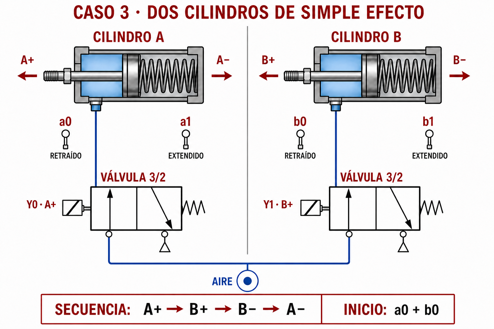
7.pngInserta aquí el esquema electroneumático de A y B.
Imagen 7. Dos cilindros de simple efecto y sus sensores finales de carrera.
INACAPCaso 3 · Dos cilindros de simple efecto
Tabla de etapas
Para mantener A extendido, Y0 debe continuar activa
M20ReposoSTART · a0 · b0
M21A+hasta a1
M22B+hasta b1
M23B−hasta b0
M24A−hasta a0
Etapa
Y0 A+
Y1 B+
Finaliza con
M21: A+
1
0
a1
M22: B+
1
1
b1
M23: B−
1
0
b0
M24: A−
0
0
a0
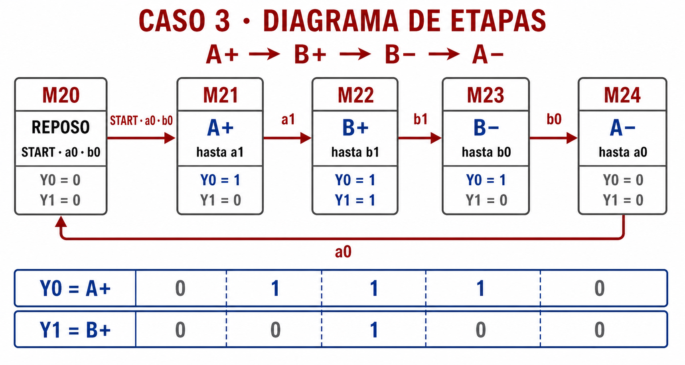
8.pngInserta aquí el diagrama gráfico de etapas del caso 3.
Imagen 8. Evolución de las etapas y estados de salida.
INACAPCaso 3 · Dos cilindros de simple efecto
Lógica principal
Las salidas son la suma de las etapas que necesitan mantener presión
TR1M20 · X0 · a0 · b0M21 ← M20
TR2M21 · a1M22 ← M21
TR3M22 · b1M23 ← M22
TR4M23 · b0M24 ← M23
TR5M24 · a0M20 ← M24
Y0/STOP · (M21 + M22 + M23)A+
Y1/STOP · M22B+
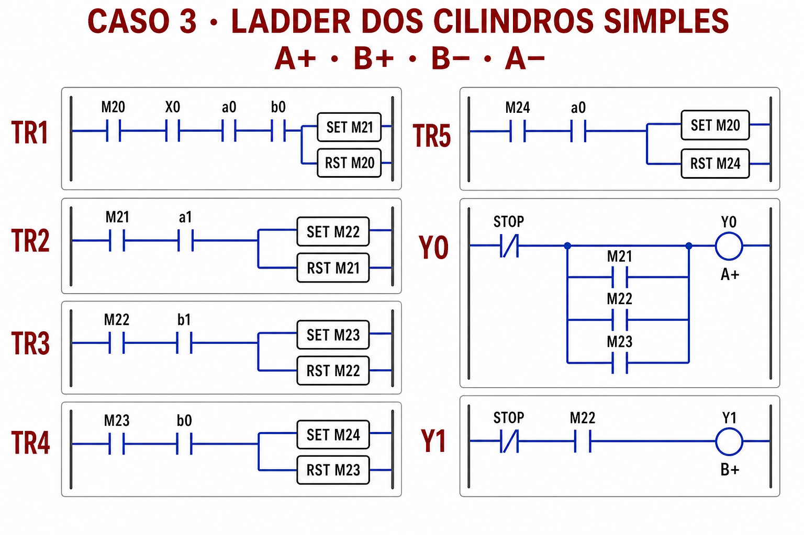
9.pngInserta aquí el programa Ladder completo del caso 3.
Imagen 9. Ladder de la secuencia A+ B+ B− A−.
INACAPCaso 3 · Ejercicio
Ahora tú
Ejercicio 3 · Cambiar el orden de retorno
Desafío
Diseña la secuencia A+ B+ A− B− con dos cilindros de simple efecto. Después de detectar b1, A debe retornar mientras B permanece extendido; solo cuando A llegue a a0 debe retornar B.
1. Tabla de cuatro movimientos.
2. Estado de Y0 y Y1 en cada etapa.
3. Condiciones de transición a1, b1, a0 y b0.
4. Programa de ciclo único.
Pista sobre las salidas
Durante A− debe quedar Y0 = 0 y Y1 = 1. Durante B− ambas salidas quedan en 0.
INACAPCaso 4 · Dos cilindros de doble efecto
Ejemplo resuelto 4
Dos actuadores, cuatro órdenes: A+ B+ B− A−
Elemento
Dirección
Función
a0 / a1
X2 / X3
Posición de A
b0 / b1
X4 / X5
Posición de B
YA+ / YA−
Y0 / Y1
Movimiento de A
YB+ / YB−
Y2 / Y3
Movimiento de B
Dos interbloqueos: YA+ con YA− y YB+ con YB−. El interbloqueo de A no reemplaza el de B.
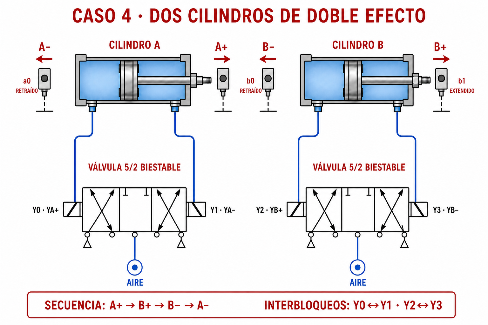
10.pngInserta aquí el esquema de dos cilindros de doble efecto.
Imagen 10. Cilindros A y B con válvulas 5/2 biestables.
INACAPCaso 4 · Dos cilindros de doble efecto
Tabla de etapas
Una orden de movimiento por etapa
M30Reposoa0 · b0
M31A+hasta a1
M32B+hasta b1
M33B−hasta b0
M34A−hasta a0
Etapa
Salida activa
Sensor esperado
Riesgo si el sensor falla
M31
Y0 = YA+
a1
La secuencia queda esperando.
M32
Y2 = YB+
b1
B continúa presurizado.
M33
Y3 = YB−
b0
No se inicia A−.
M34
Y1 = YA−
a0
No retorna al reposo.
Diagnóstico sencillo: la memoria activa indica qué movimiento está esperando confirmación.
INACAPCaso 4 · Dos cilindros de doble efecto
Lógica principal
Las memorias activan solo la bobina correspondiente al movimiento actual
TR1M30 · START · a0 · b0M31 ← M30
TR2M31 · a1M32 ← M31
TR3M32 · b1M33 ← M32
TR4M33 · b0M34 ← M33
TR5M34 · a0M30 ← M34
OUTM31→Y0 · M32→Y2 · M33→Y3 · M34→Y14 salidas
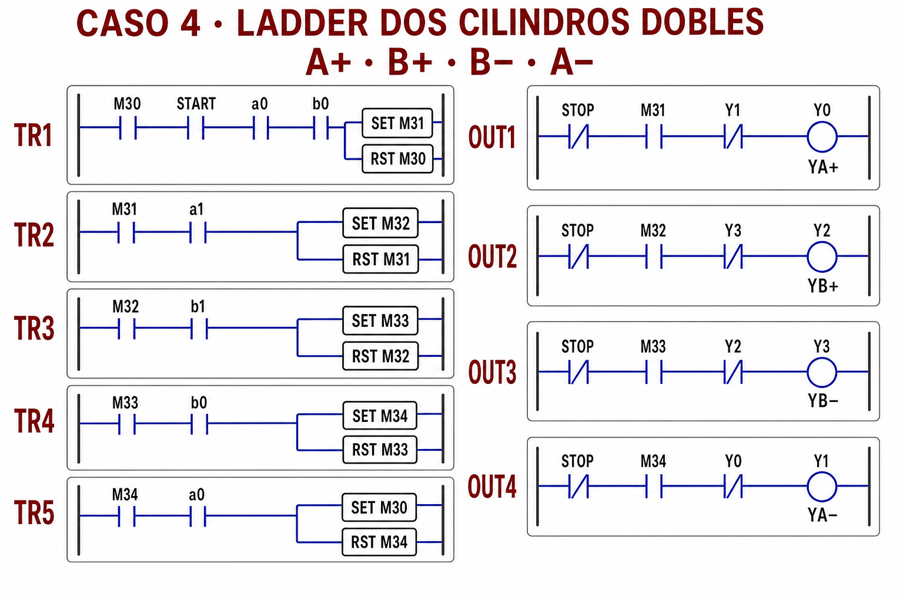
11.pngInserta aquí el programa Ladder completo del caso 4.
Imagen 11. Ladder de A+ B+ B− A− con válvulas biestables.
INACAPCaso 4 · Ejercicio
Ahora tú
Ejercicio 4 · Secuencia con pausas intermedias
Desafío
Programa A+ · espera 1 s · B+ · A− · espera 1 s · B−. Usa dos temporizadores y memorias diferentes para cada espera.
1. Seis etapas más reposo.
2. T0 después de a1 y T1 después de a0.
3. Interbloqueo para ambas válvulas.
4. Prueba forzando b1 y a0.
Pista de diseño
Una espera también es una etapa. No conectes el temporizador directamente entre dos bobinas; crea una memoria propia para cada pausa y úsala como condición de su temporizador.
INACAPCaso 5 · Tres cilindros de simple efecto
Ejemplo resuelto 5
Secuencia simétrica: A+ B+ C+ C− B− A−
Los cilindros avanzan en orden A, B y C. Luego retornan en el orden inverso. Cada salida debe mantenerse activa hasta la etapa en que corresponda su retorno.
Cilindro
Sensores
Salida
A
X2 a0 · X3 a1
Y0 A+
B
X4 b0 · X5 b1
Y1 B+
C
X6 c0 · X7 c1
Y2 C+
Inicio permitido: START · a0 · b0 · c0.
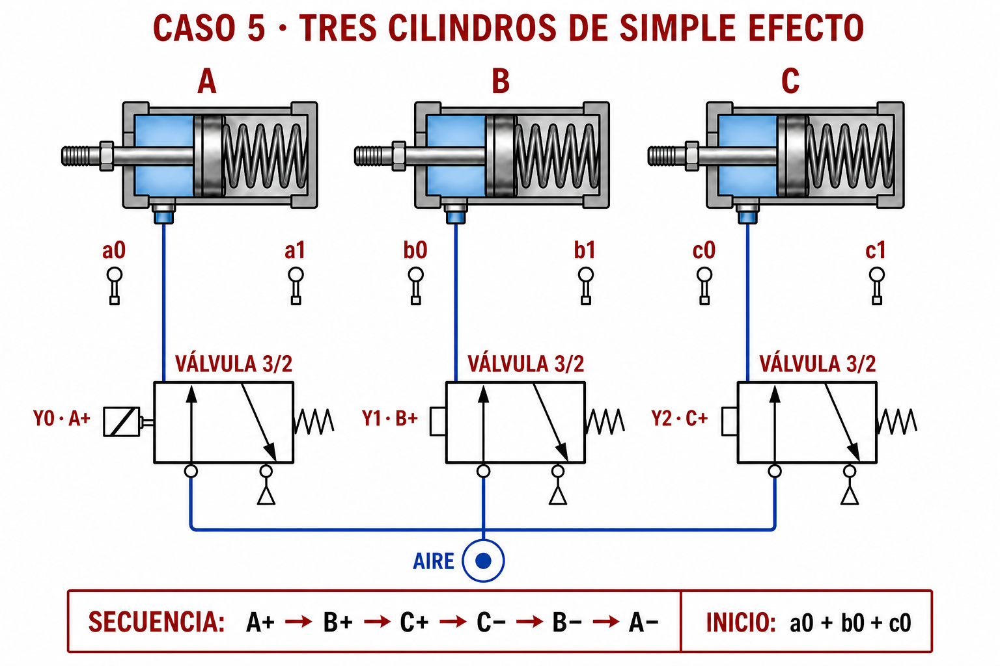
12.pngInserta aquí el esquema electroneumático de A, B y C.
Imagen 12. Tres cilindros de simple efecto con sus válvulas 3/2.
INACAPCaso 5 · Tres cilindros de simple efecto
Tabla de etapas
El patrón de salidas sube y luego baja
Etapa
Movimiento
Y0 A+
Y1 B+
Y2 C+
Transición
M41
A+
1
0
0
a1
M42
B+
1
1
0
b1
M43
C+
1
1
1
c1
M44
C−
1
1
0
c0
M45
B−
1
0
0
b0
M46
A−
0
0
0
a0
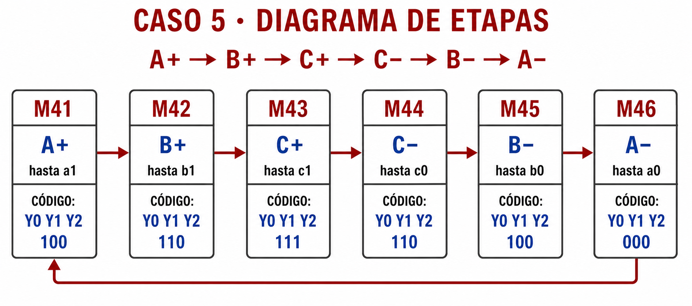
13.pngInserta aquí el diagrama gráfico de las seis etapas.
Imagen 13. Secuencia de estados A+ B+ C+ C− B− A−.
INACAPCaso 5 · Tres cilindros de simple efecto
Lógica principal
Cada salida se construye con las etapas que la necesitan activa
Y0M41 + M42 + M43 + M44 + M45A+
Y1M42 + M43 + M44B+
Y2M43C+
Lectura: A debe mantenerse extendido durante cinco etapas; B durante tres; C solamente durante su etapa de avance.
STOP seguro para este caso: al borrar las etapas y desenergizar Y0, Y1 e Y2, los tres cilindros tenderán a retornar por resorte. Verifica que ese retorno simultáneo sea mecánicamente seguro.
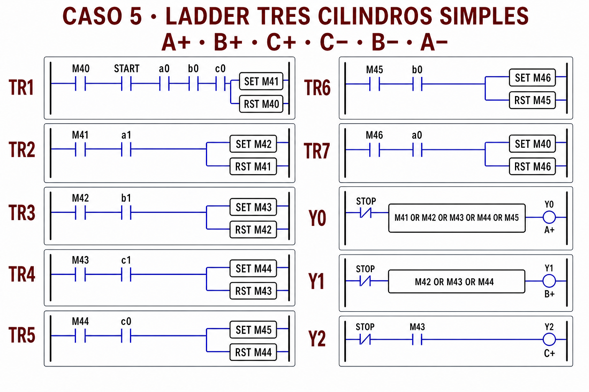
14.pngInserta aquí el programa Ladder completo del caso 5.
Imagen 14. Ladder de A+ B+ C+ C− B− A−.
INACAPCaso 5 · Ejercicio
Ahora tú
Ejercicio 5 · Retorno no simétrico
Desafío
Diseña la secuencia A+ B+ C+ B− C− A−. B debe retornar primero, C debe permanecer extendido hasta confirmar b0 y A debe permanecer extendido hasta confirmar c0.
1. Tabla de seis etapas.
2. Combinación de salidas por etapa.
3. Red de transición para cada sensor.
4. Explicación de por qué C sigue extendido durante B−.
Pista sobre la etapa B−
En B−, los estados deben ser A extendido, B retornando y C extendido: Y0 = 1, Y1 = 0, Y2 = 1.
INACAPCaso 6 · Tres cilindros de doble efecto
Ejemplo resuelto 6
Seis movimientos controlados: A+ B+ C+ C− B− A−
Cilindro
Avance
Retroceso
A
Y0 = YA+
Y1 = YA−
B
Y2 = YB+
Y3 = YB−
C
Y4 = YC+
Y5 = YC−
Las entradas de posición se mantienen como a0/a1, b0/b1 y c0/c1.
Tres interbloqueos independientes: Y0↔Y1, Y2↔Y3 y Y4↔Y5.
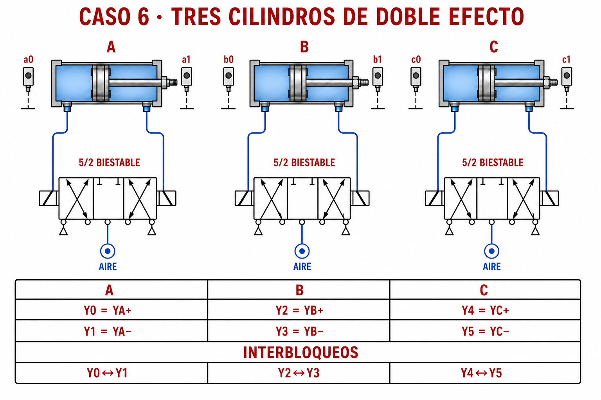
15.pngInserta aquí el esquema electroneumático de A, B y C.
Imagen 15. Tres cilindros de doble efecto y seis bobinas de mando.
INACAPCaso 6 · Tres cilindros de doble efecto
Tabla de etapas
Una memoria, una orden de movimiento y un sensor final
Etapa
Movimiento
Salida
Final de movimiento
Etapa siguiente
M51
A+
Y0
a1
M52
M52
B+
Y2
b1
M53
M53
C+
Y4
c1
M54
M54
C−
Y5
c0
M55
M55
B−
Y3
b0
M56
M56
A−
Y1
a0
M50 reposo
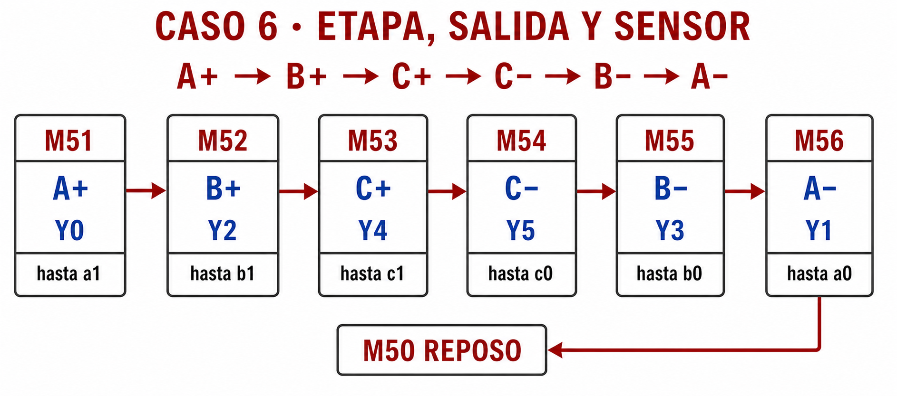
16.pngInserta aquí el diagrama gráfico de las seis etapas.
Imagen 16. Relación entre etapa, salida y sensor de transición.
INACAPCaso 6 · Tres cilindros de doble efecto
Lógica principal
El programa conserva el mismo patrón; solo aumenta el número de etapas
17.pngInserta aquí el programa Ladder completo del caso 6.
Imagen 17. Ladder de A+ B+ C+ C− B− A−.
INACAPCaso 6 · Ejercicio
Ahora tú
Ejercicio 6 · Estación de transferencia
Desafío integrador
Programa A+ B+ C+ A− B− C− con modo de ciclo único. Agrega un selector X8 AUTOMÁTICO: si está activo al finalizar C−, el sistema puede iniciar un nuevo ciclo; si está inactivo, debe quedar en reposo.
1. Secuencia y tabla de siete estados.
2. Seis salidas con tres interbloqueos.
3. Selección ciclo único / repetitivo.
4. Estado seguro después de reiniciar el PLC.
Pista para el modo automático
Al llegar a c0, vuelve siempre a la memoria de reposo. Desde reposo, inicia con START o con la condición AUTOMÁTICO, pero únicamente si a0, b0 y c0 confirman la posición inicial.
INACAPSeguridad funcional de la secuencia
Situaciones reales
STOP, RESET y emergencia no significan lo mismo
STOP de proceso
Detiene el ciclo de manera programada. Puede conservar el estado para continuar o exigir un reinicio.
RESET de secuencia
Borra las memorias de movimiento, activa reposo y verifica sensores antes de aceptar START.
Emergencia
Debe actuar mediante un sistema de seguridad adecuado, no solo mediante lógica Ladder estándar.
Importante: cortar bobinas no garantiza el mismo comportamiento en una válvula monoestable y en una biestable. La reacción neumática debe analizarse antes de definir el reset.
INACAPDiagnóstico de programas secuenciales
Errores frecuentes
Cuando la secuencia no avanza, revisa el estado antes de cambiar el código
Ninguna etapa activa: faltó inicializar la memoria de reposo o un reset borró todas las etapas.
Dos etapas activas: una transición hizo SET de la siguiente, pero no RST de la anterior.
Movimiento detenido: el sensor final no cambia o está asignado a otra entrada.
Bobinas opuestas activas: falta interbloqueo o existen etapas incompatibles.
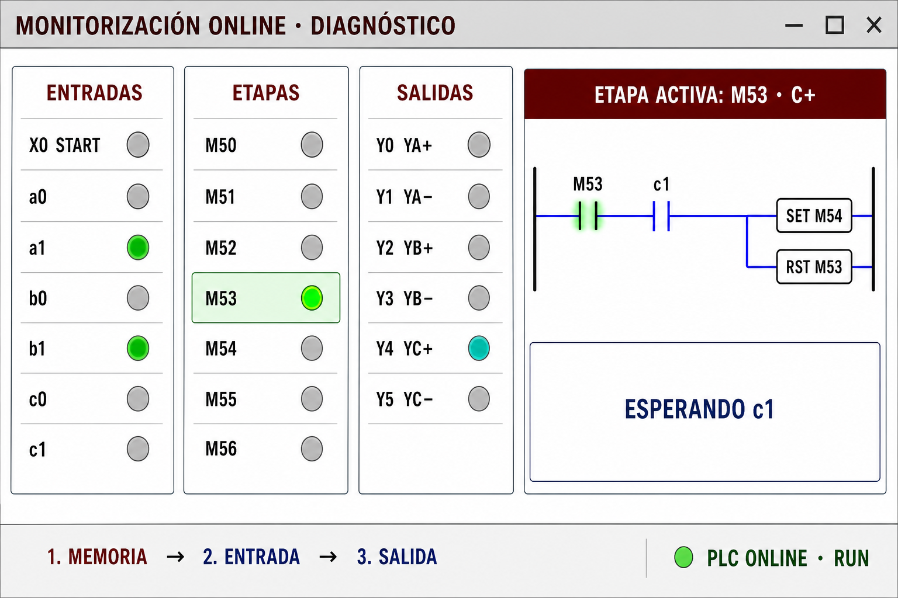
18.pngInserta aquí una captura de monitorización online y diagnóstico.
Imagen 18. Observación de entradas, memorias de etapa y salidas durante una prueba.
INACAPComprobación del programa
Prueba sistemática
No basta con observar un ciclo correcto
Antes de START, solo está activa la etapa de reposo.
START no funciona si falta un sensor de posición inicial.
Cada etapa activa exactamente las salidas previstas.
Cada sensor produce una sola transición.
No existen dos órdenes opuestas sobre la misma válvula.
Un sensor que no llega detiene el avance de la secuencia.
STOP y RESET producen el comportamiento definido.
Después de energizar el PLC, el estado es conocido.
Método recomendado: monitorea primero memorias M, luego entradas X y finalmente salidas Y. Así separas un error de secuencia de un problema eléctrico o neumático.
INACAPAutoevaluación
Comprueba tu aprendizaje
Preguntas de estudio
1. ¿Por qué A− se programa de manera diferente en un cilindro de simple efecto?
2. ¿Qué función cumple una memoria de etapa?
3. ¿Por qué una espera temporizada debe tratarse como etapa?
4. ¿Qué ocurre si dos etapas permanecen activas?
5. ¿Por qué una válvula biestable puede quedar sin bobinas durante una espera?
6. ¿Cómo se construye la salida A+ en el caso de tres cilindros simples?
7. ¿Qué sensores deben comprobarse antes de START?
8. ¿Por qué STOP no reemplaza una parada de emergencia?
Ver respuestas breves
1) El retorno depende del resorte y se obtiene desenergizando. 2) Representa el estado actual. 3) Porque tiene duración y transición propias. 4) Puede haber salidas contradictorias. 5) Conserva la posición mecánica de la corredera. 6) Sumando las etapas que necesitan A extendido. 7) Los sensores de posición inicial de todos los cilindros. 8) Porque la seguridad requiere elementos y arquitectura adecuados, independientes de la lógica normal.
INACAPPlantilla para resolver nuevas secuencias
Herramienta de estudio
Completa esta tabla antes de programar
Etapa
Movimiento o espera
Salidas activas
Condición de transición
Siguiente etapa
Reposo
________________
________________
START + posición inicial
________________
1
________________
________________
________________
________________
2
________________
________________
________________
________________
3
________________
________________
________________
________________
4
________________
________________
________________
________________
5
________________
________________
________________
________________
6
________________
________________
________________
________________
Orden de implementación: inicialización → transiciones → temporizadores → salidas → interbloqueos → STOP/RESET → pruebas.
INACAPRecursos de la guía
Imágenes locales
Cómo agregar los diagramas y capturas
Ubicación
Guarda el archivo HTML y las imágenes 1.png, 2.png, 3.png… 18.png dentro de la misma carpeta.
Al abrir nuevamente la guía, cada espacio mostrará automáticamente la imagen que corresponda.
Código ya incorporado
HTML<img src="1.png" alt="Descripción de la imagen">Imagen 1
No necesitas editar rutas mientras las imágenes permanezcan junto al HTML y con el nombre exacto en minúsculas.
Evita espacios y tildes en los nombres: utiliza exactamente 1.png, 2.png, etc.
INACAPCierre de la guía
Síntesis
Una secuencia compleja sigue siendo una suma de etapas simples
Describe
Escribe los movimientos en orden y confirma la posición inicial.
Divide
Asigna una memoria a cada movimiento o espera.
Comprueba
Observa etapa, sensor y salida antes de modificar el programa.
Idea clave: el Ladder no “adivina” el proceso. Cada sensor confirma un hecho físico y cada memoria conserva el lugar exacto de la secuencia.
Próximo paso sugerido: implementar uno de los ejercicios en el PLC o simulador y documentar la monitorización de cada etapa.